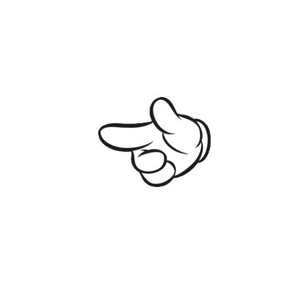

Welcome to the web portal of Kubernetes, you can enter you requirements in the box above, it can do the following things for, refresh after each use(development in progress):  Create Pods Create Deployment Expose port Replicate Clean all Delete resources